武士道 Bushido — The Way of the Warrior in Feudal Japan
794 – 1868 AD · The Age of the Warrior Class
Legendary Samurai & Shoguns
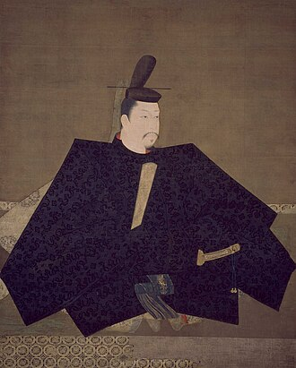
Minamoto no Yoritomo
1147–1199 · First Shogun
Founded the Kamakura Shogunate in 1185, becoming Japan's first shogun. Transferred real power from the Emperor to the samurai class. His victory in the Genpei War established the feudal system that would define Japan for 700 years.
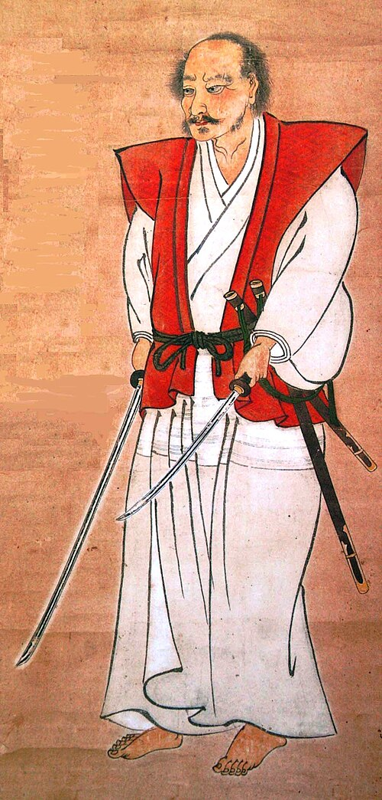
Miyamoto Musashi
1584–1645 · The Undefeated Swordsman
Japan's most famous swordsman, undefeated in over 60 duels. Developed the two-sword Niten Ichi-ryū style. His "Book of Five Rings" (Go Rin No Sho) is still studied by business leaders and martial artists worldwide.
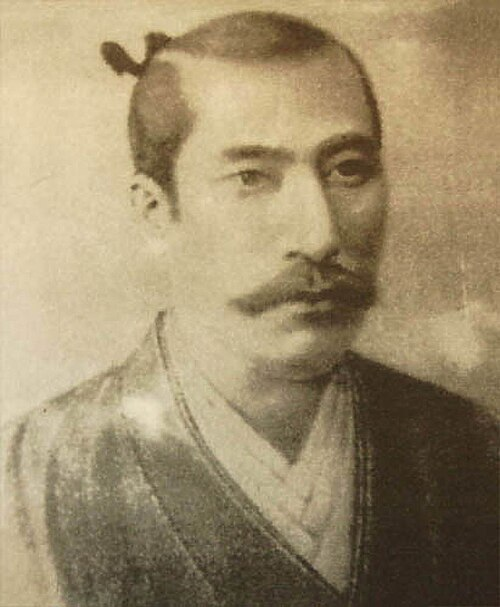
Oda Nobunaga
1534–1582 · The Demon King
The first of the three great unifiers of Japan. Ruthlessly innovative — adopted firearms from Portuguese traders, used volley fire tactics decades before Europe. Almost unified Japan before being assassinated by his own general Akechi Mitsuhide.
Tokugawa Ieyasu
1543–1616 · Final Unifier of Japan
The last of the three great unifiers. Won the decisive Battle of Sekigahara (1600) and established the Tokugawa Shogunate — 265 years of peace and isolation (sakoku). His dynasty ruled Japan until the Meiji Restoration in 1868.
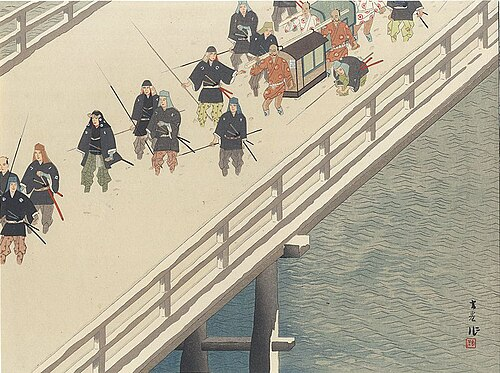
The 47 Rōnin
1703 · The Ultimate Loyalty
When their lord Asano was forced to commit ritual suicide after insulting a court official, his 47 retainers spent a year planning their revenge. They killed the official Kira, then surrendered and were allowed to die honorably. The ultimate expression of samurai loyalty.
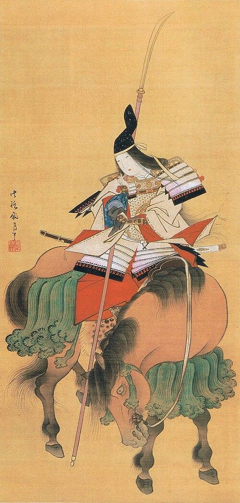
Tomoe Gozen
c. 1157 · Female Samurai
One of history's most celebrated female warriors (onna-musha). Described as "a remarkably strong archer" and "as a swordswoman she was a warrior worth a thousand." Fought in the Genpei War alongside Minamoto no Yoshinaka.
Bushido — The Eight Virtues
義
Gi — Righteousness
The way of right action. A samurai must make decisions based on reason and principle, not emotion or self-interest. "Death is not the greatest loss in life. The greatest loss is what dies inside us while we live."
勇
Yū — Courage
Moral and physical courage — not fearlessness, but the ability to act despite fear. Rising when it is right to rise. "Hiding like a mouse in a hole is not courage."
仁
Jin — Benevolence
Love, generosity, compassion for all. The samurai must temper power with mercy. The highest attribute of the human soul — accessible only through mastery of the other virtues.
礼
Rei — Respect
Courtesy to all people — enemies and allies alike. A samurai who acts with insolence is no samurai at all. Respect demonstrates inner strength, not weakness.
誠
Makoto — Honesty
Total sincerity — the samurai has no need for written contracts or oaths. Their word alone is their bond. "A samurai's word is like a sword — it cuts when it must."
名誉
Meiyo — Honor
Personal honor and the family's honor are inseparable. Death is preferable to dishonor — seppuku (ritual suicide) was the samurai's ultimate expression of this principle.
忠義
Chūgi — Loyalty
Absolute loyalty to one's lord — the foundation of the feudal system. The story of the 47 Rōnin is the supreme expression of this virtue, inspiring Japanese culture for centuries.
自制
Jisei — Self-Control
Mastery of emotions and desires. The samurai must control anger, fear, and greed, maintaining equanimity in all circumstances — in battle and in peace alike.
Timeline of Samurai Japan
794
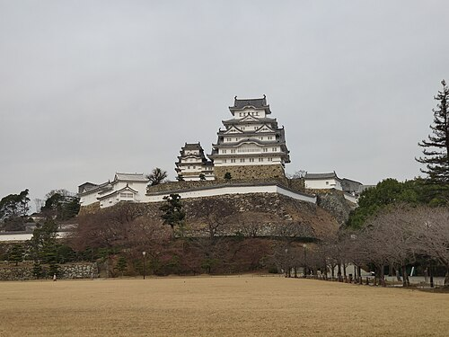
Heian Period Begins
The imperial court moves to Heian-kyo (Kyoto). Provincial warriors (samurai) are employed by aristocrats to protect estates. The warrior class begins its centuries-long rise to power.
1185
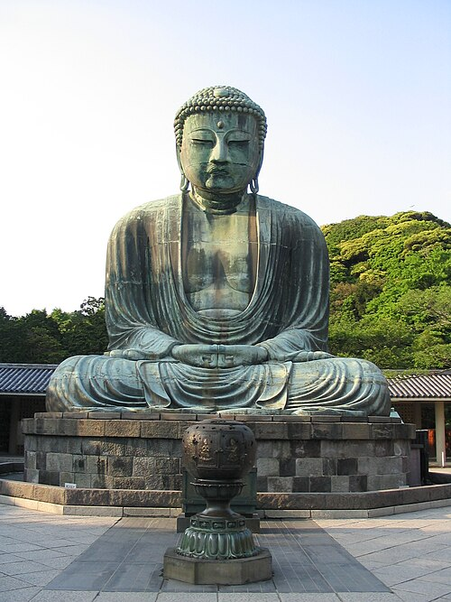
First Shogunate Established
Minamoto Yoritomo establishes the Kamakura Shogunate — the first military government. The Emperor becomes a figurehead; real power passes to the samurai class for 700 years.
1274
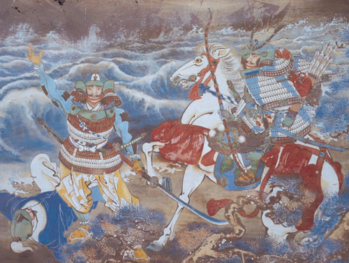
Mongol Invasion Repelled
Kublai Khan's fleet is destroyed by a typhoon — the "kamikaze" (divine wind). Samurai defenders had fought off the initial landings. A second invasion in 1281 was also destroyed by storms.
1600
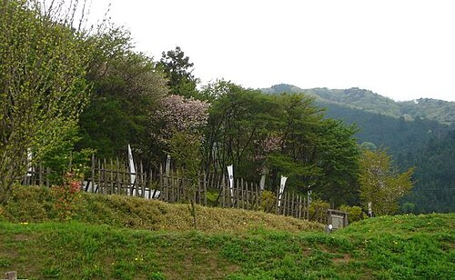
Battle of Sekigahara
Tokugawa Ieyasu defeats a coalition of rivals in one day of battle, effectively ending the Sengoku (Warring States) period. The Tokugawa Shogunate begins 265 years of relative peace.
1868
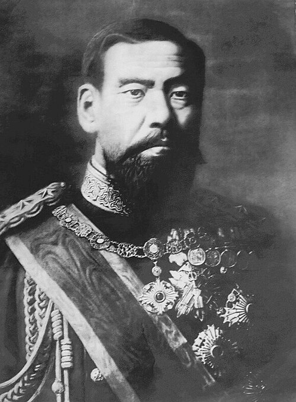
Meiji Restoration
Emperor Meiji is restored to power; the samurai class is abolished. The 1877 Satsuma Rebellion — the last samurai uprising — is crushed. Western-style conscript army replaces feudal warriors.
Gallery — Feudal Japan
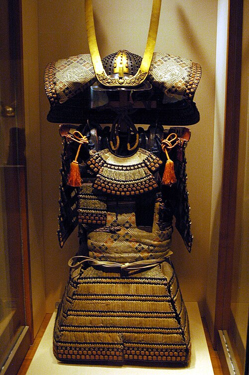
O-Yoroi Armor
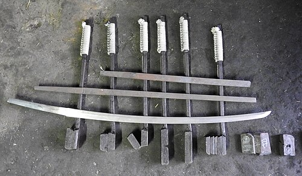
Katana
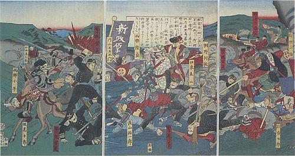
Satsuma Rebellion, 1877
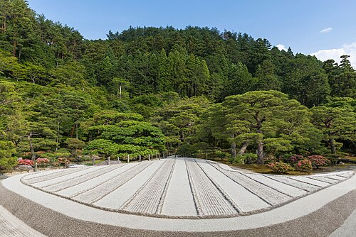
Zen Temple, Kyoto
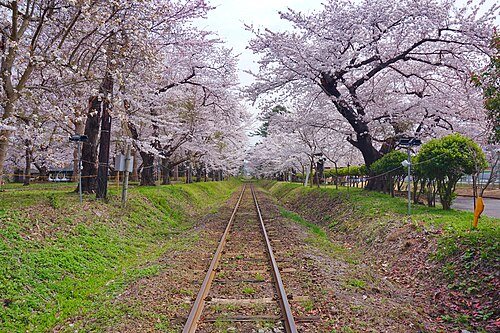
Hanami — Cherry Blossom Viewing
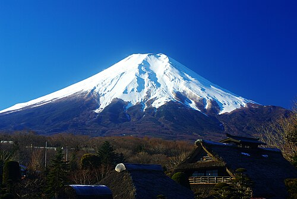
Mount Fuji
Himeji Castle
Battle of Sekigahara
The Great Wave — Hokusai
Mongol Invasion, 1274
Great Buddha of Kamakura
Emperor Meiji
Cherry Blossoms — Mono no Aware
Click to release cherry blossoms — a symbol of the beauty and transience of life (mono no aware)